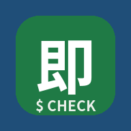
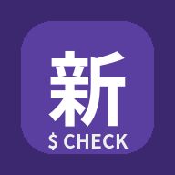

交易会ツール
開いてから、ブラウザのメニューで「ホーム画面に追加」すると、オフラインで使えるアプリになります。2つとも追加してください。

即決チェッカー企画済みの商品（76SKU）の即決ライン・見積チェック・メモ
新商品チェッカー会場で見つけた新商品の見積チェック・メモ開いてから、ブラウザのメニューで「ホーム画面に追加」すると、オフラインで使えるアプリになります。2つとも追加してください。

即決チェッカー企画済みの商品（76SKU）の即決ライン・見積チェック・メモ
新商品チェッカー会場で見つけた新商品の見積チェック・メモ